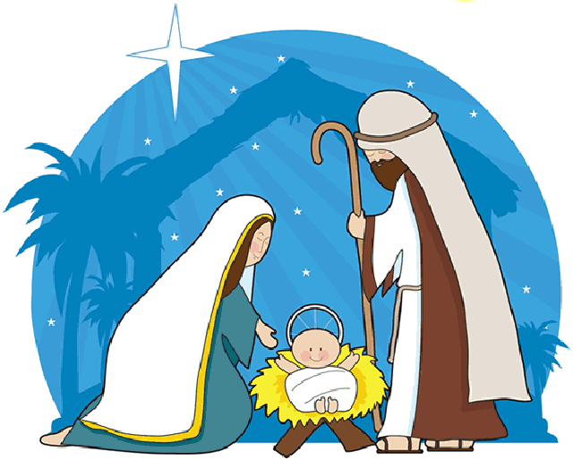

Qual foi a origem do Natal?
A festa de Natal tem suas raízes em festas pagãs que eram realizadas na antiguidade. Nessa data, os romanos celebravam a chegada do inverno (solstício de inverno). Eles cultuavam o Deus Sol (natalis invicti Solis), e ainda realizavam dias de festividades com o intuito de renovação.Outros povos da antiguidade também celebravam a data, seja pela chegada do inverno ou pela passagem do tempo.
A partir do século IV, e com a consolidação da Igreja Católica em Roma, a festividade foi oficializada como dies natalis Christi (Natal de Cristo). Como não se sabe ao certo o dia em que Jesus nasceu, essa foi uma forma de cristianizar as festas pagãs romanas, dando-lhes uma nova simbologia.
O termo Natal tem origem na palavra do latim “natalis” que, por sua vez, é derivada do verbo nascer (nāscor).
A escolha da data foi ratificada em 350 d.C pelo Papa Júlio I (337-352).
Desde então, o Natal passou a ser comemorado em diversos países, normalmente marcado pela celebração da renovação e do nascimento.
